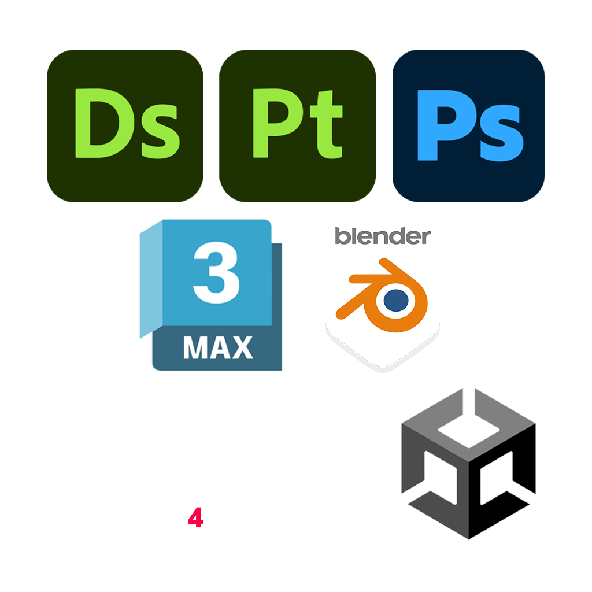

About Me
“Toliho” is my creative alias, derived from my full name, Tom Oliver Hockenhull. I am an Environment and 3D Artist based in the UK.
Since 2018, I’ve been studying and working within the games industry. I studied a BA (Hons) and MA in Games Art at Sheffield Hallam University, graduating with First Class Honours in both qualifications (2022).
Professionally, I have contributed to a published title on the PS5 Racecar Crashers and I am currently creating art assets for a soon to be published title on Steam.
I am currently seeking a permanent role within an established game studio, where I can contribute to ambitious projects, collaborate with talented developers and continue to grow as a professional.
My workflow has traditionally centres around creating polished, game-ready assets and environments using industry-standard tools. I am continuously expanding my technical skillset, currently this is focusing on improving my knowledge of C# and programming in general, bridging the gap between art and technology.
